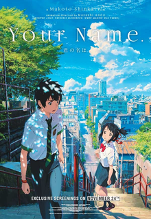

No geral é um bom anime japonês que utilizar um tom místico. O fato sobre a história é que ela foi desenvolvida para o público mais jovem, com isso o filme faturou mais de US$320 milhões em sem ser lançando no Estados Unidos.
Uma curiosidade que no Brasil o filme só foi exibido entre 11 e 17 de outubro de 2017 pela Cinemark.
A ideia de troca de corpos, em que sem nenhum motivo aparente dois adolescentes tem suas vidas trocadas, ela do interior do Japão e ele da grande Tóquio. Uma grande ideia é que a troca é somente em alguns dias ao dormir.
Pela troca não ser permanente, fazem com que eles tenham precisem conviver com uma realidade diferente do que estão acostumados para que ambos possam ter uma vida com algum sentido. Utilizado a referência que vem do livro na qual o filme foi baseado, os personagens fazem o uso dos smartphones para deixar informação para outro sempre que eles trocam de corpo.
Depois de um plot twist a história muda. O filme passa a foca mais na relação de romance ente os personagens. Nessa segunda parte de Your Name focada mais no relacionamento do que na experiência de troca de cultura que possui na parte anterior, o que combina perfeitamente com ideia que filme passa.
Aoi Yuki, Kana Hanazawa, Masaki Terasoma, Nobunaga, Chafûrin, Kazohiko Kamiki, Yôhei Namekawa, Kaito Ishinawa, Mone Kamishiraishi, Sayaka Ohara e Yuka Terasaki.
>